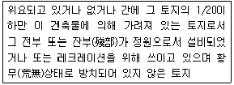
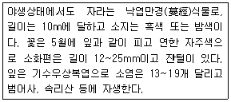
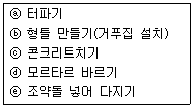
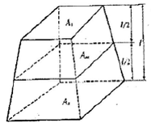
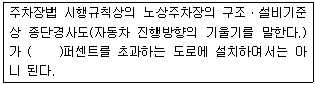
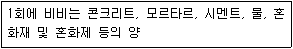
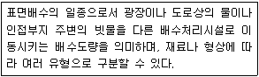

조경산업기사 (2011-03-20 기출문제)
1과목: 조경계획 및 설계
1. 형태 조사 방법 중 물리적 흔적(physical traces)의 관찰 방법으로 부적합한 것은?
- 일정 장소의 의자배치, 낙서, 잔디마모 등의 물리적 흔적을 관찰하는 것이다.
- 연구하고자 하는 인간행태에 영향을 미치지 않는다.
- 일반적으로 정보를 얻는데 시간이 많이 걸려 비용이 많이 든다.
- 대부분의 물리적 흔적은 비교적 장시간 변형되지 않으므로 반복적인 관찰이 가능하다.
(정답률: 81%)

2. 다음 중 경복궁에 경회루(慶會樓)를 창건하고, 방형(方形)의 연못을 판 시기는?
- 1394년(태조 3년)
- 1456년(세조 2년)
- 1412년(태종 12년)
- 1592년(선조 25년)
(정답률: 86%)
3. 당(唐)의 백낙천(白樂天)이 장한가(長恨歌) 속에서 아름다움을 묘사한 이궁은?
- 화청궁(華淸宮)
- 아방궁(阿房宮)
- 상림원(上林苑)
- 건장궁(建章宮)
(정답률: 74%)
4. 다음 중 사회적 가치에 근거하여 토지가 지나고 있는 본래의 잠재력을 분석, 평가한 토지이용의 최종 평가는?
- Capabiility(잠재력도)
- Opportunity(기회요소)
- Constraints(제한요소)
- Suitability(적합도)
(정답률: 82%)
5. 다음 중 가장 파괴가 빠르며 회복이 어려운 생태계 유형은?(오류 신고가 접수된 문제입니다. 반드시 정답과 해설을 확인하시기 바랍니다.)(오류 신고가 접수된 문제입니다. 반드시 정답과 해설을 확인하시기 바랍니다.)
- 삼림생태계(森林生態係)
- 경작지생태계(耕作地生態系)
- 호소생태계(湖沼生態系)
- 도시생태계(都市生態系)
(정답률: 41%)
6. 나뭇잎이 녹색으로 보이는 이유로 가장 적합한 것은?
- 녹색의 빛은 투과하고 그 밖의 빛은 흡수하기 때문
- 녹색의 빛은 산란하고 그 밖의 빛은 반사하기 때문
- 녹색의 빛은 반사하고 그 밖의 빛은 흡수하기 때문
- 녹색의 빛은 흡수하고 그 밖의 빛은 반사하기 때문
(정답률: 86%)
7. 원격탐사(remote sensing)의 특징에 대한 설명으로 틀린 것은?
- 모든 식생이나 식생 상태의 분광 특성은 항상 동일하다.
- 광역성, 동시성, 주기성, 전자파 이용 등의 특징을 가지고 있다.
- 대상물체의 특성에 따른 반사 또는 방사된 에너지를 감지해서 정보를 수집하는 기술이다.
- 우리나라는 자체 자원 탐사를 위한 인공위성을 운영하고 있다.
(정답률: 93%)
8. “빨강, 채도 6, 명도 5”인 색의 먼셀 색표기로 옳은 것은?
- R5 5/6
- 5R 6/5
- 5R 5/6
- R5 6/5
(정답률: 88%)
9. 조경설계기준상의 배수시설에 관한 설명으로 옳은 것은?
- 표면배수시 녹지의 식재면은 일반적으로 1/20~1/30 정도의 배수 기울기로 설계한다.
- 개거배수는 지표수의 배수가 주 목적임으로 지표저류수, 암거로의 배수, 일부의 지하수 및 용도 등은 배수하지 않는다.
- 암거배수시 관은 관내부로 외부 토양수와 토산느 들어오지 못하도록 설계한다.
- 사주법은 식재지가 불투수층으로 그 두께가 2~3m이고 하층에 불투수층이 존재하는 경우에는 하층의 불투수층까지 나무구덩이를 관통시키고 참흙을 넣어 객토하는 공법으로 설계한다.
(정답률: 72%)
10. 도시계획시설의 결정ㆍ구조 및 설치기준에 관한 규칙상 도로의 일반적인 결정기준에 따른 도로 배치간격으로 맞는 것은? (단, 시ㆍ군의 규모, 지형조건, 토지이용계획, 인구밀도 등 감안 사항은 적용하지 않는다.)
- 주간선도로와 주간선도로의 배치간격 : 2500미터 내외
- 주간선도로와 보조간선도로의 배치간격 : 1000미터 내외
- 보조간선도로와 집산도로의 배치간격 : 250미터 내외
- 국지도로간의 배치간격 : 가구의 짧은변 사이의 배치간격은 50미터 내지 1000미터 내외, 가구의 긴변 사이의 배치간격은 25미터 내지 50미터 내외
(정답률: 77%)
11. 저드(judd.D.B) 유색채조화론의 4가지 원리가 아닌 것은?
- 안정의 원리
- 질서의 원리
- 숙지의 원리
- 비모호성의 원리
(정답률: 32%)
12. 도시자연공원구역 안에서 건축물의 건축 또는 공작물의 설치에 관한 기준으로 틀린 것은? (단, 도시공원 및 녹지 등에 관한 법률 시행령을 적용한다.)
- 도시자연공원구역 안에 행위허가된 시설의 부지면적은 전체 도시자연공원구역면적[취락지구와 공공용시설(도시계획시설에 한한다.)을 제외한 면적을 말한다]의 5%를 초과할 수 없다.
- 건폐율은 100분의 30 이내로 하고 용적율은 200퍼센트 이내로 한다.
- 높이는 최대 12미터, 3층 이하로 하고, 주변 미관과 조화를 이루어야 한다.
- 건축물 또는 공작물 중 기반시설로서 건축 연면적이 1천 500제곱미터 이상인 시설은 국토의 계획 및 이용에 관한 법률 시행령 제 35조의 규정에 불구하고 도시계획 시설로 설치하도록 하여야 한다.
(정답률: 65%)
13. 분리효과에 희한 배색에서 분리색으로 주로 사용되는 색은?
- 두색의 중간색
- 무채색
- 채도가 강한색
- 반대색
(정답률: 85%)
14. 다음을 정희하고 있는 오픈 스페이스법(Open Space Act)을 제정한 나라는?

- 독일
- 미국
- 일본
- 영국
(정답률: 73%)
15. 안압지에 대한 설명으로 거리가 먼 것은?
- 임해전은 자연적인 곡선 형태로 못의 동쪽에 남북축선상에 배치되었다.
- 못 안에 대, 중, 소 3개의 성이 축조되었다.
- 출수구는 못의 북안 서쪽에서 발견되었다.
- 섬과 인공동산에 경석을 배치하였다.
(정답률: 72%)
16. 높이가 다른 등고선(等高線)이 교차하거나 합치하는 경우는?
- 도로가 있을 때
- 강이 있을 때
- 절벽이나 동굴이 있을 때
- 산의 정상일 때
(정답률: 92%)
17. 다음 중 선의 용도를 셜명한 것으로 틀린 것은?
- 굵은 실선은 단면의 윤곽표시를 한다.
- 가는 실선은 치수선, 인출선 등에 사용된다.
- 파선을 중심선, 절단선, 기준선, 경계선, 참고선 등에 사용된다.
- 2점 쇄선은 이동하는 부분의 이동 후의 위치를 가상하여 나타내는 선이다.
(정답률: 72%)
18. 다음 중 인터체인지의 형식 중 고속도로상호간의 출입에 쓰이며, 가장 넑은 면적이 필요한 것은?
- 클로버형
- 트럼펫형
- 다이아몬드형
- Y형
(정답률: 77%)
19. 고대 이집트의 일반적인 정원 특징으로 틀린 것은?
- 사각형 부지는 높은 당장에 의하여 둘러싸여 있다.
- 연못은 방형 또는 장방형이다.
- 조경 수목으로는 과실나무가 많다.
- 정원의 국부(局部)나 재료는 자연스럽게 비대칭 배치되었다.
(정답률: 79%)
20. 일본의 정원 양식 가운데서 뜰에 물통(쓰꾸바이)이 활용 되었던 시기는?
- 침전식정원(寢殿式庭園)
- 고산수정원(枯山水庭園)
- 다정(茶庭 또는 地)
- 임천회유식정원(林泉廻遊式庭園)
(정답률: 90%)
2과목: 조경식재
21. 무늬식재는 다음 중 어느 식재수법에 해당되는가?
- 정형식재
- 자유식재
- 산재식재
- 비정형식재
(정답률: 76%)
22. 다음 중 상록 활엽교목으로만 나열된 것은?
- 감탕나무, 동백나무, 구상나무
- 함박꽃나무, 자작나무, 노각나무
- 산수유, 후박나무, 먼나무
- 조록나무, 황칠나무, 녹나무
(정답률: 63%)
23. 꽃이나 잎의 형태와 같이 보다 작은 식물학적 차이점을 지닌 것으로 식물의 명명에서 “for."로 표기하는 것은?
- 품종
- 재배품종
- 이명
- 변종
(정답률: 81%)
24. 정형식 배식에 어울리는 수목이 갖는 조건으로 부적합한 것은?
- 균형이 잡히고 개성이 강한 수목
- 생장 속도가 빠른 수목
- 사철 푸른 잎을 가진 수목
- 다듬기 작업에 잘 견디는 수목
(정답률: 72%)
25. 식물생육에 가장 알맞은 토양 구성은 적당한 토양공기와 토양 수분이 있어야 뿌리의 호흡과 수분흡수가 적합하다. 다음 중 어느 것이 가장 적합한 토양 구성인가? (단, 구성비율은 무기물 : 유기물 : 토양공기 : 토양수분의 순이다.)
- 5%:45%:30%:20%
- 45%:5%:25%:25%
- 5%:35%:40%:20%
- 45%:5%:30:20%
(정답률: 85%)
26. 조릿대, 인동덩굴, 잔디, 맥문동 등의 식물로 지표를 치밀하게 피복하여 나지를 남기지 않도록 하고 양지성 식물과 음지성 식물의 조건을 가름하여 식재하는 식재기능은?
- 지표식재
- 유도식재
- 녹음식재
- 지피식재
(정답률: 75%)
27. 다음 식물 호르몬 중 스트레스의 감지, 잎, 꽃, 열매의 탈리현상, 가을 낙엽 등 식물 노화촉진 효과와 가장 관계가 있는 것은?
- IAA
- Cytokinin
- Gibberellin
- Abscisic acid
(정답률: 69%)
28. ‘산목련’이라고 불리고 있는 수종으로 마취가 있는 수형과 순백색의 청순한 꽃이 특징적이며 상대습도가 높은 작은 공간의 강조식재에 적합한 수종은?
- Magnolia sieboldii
- Magnolia obovata
- Magnolia denudata
- Magnolia kobus
(정답률: 57%)
29. 수목을 건축적으로 이용했을 때 발생하는 기능과의 관계 설명으로 부적합한 것은?
- 소공간의 특색을 인지시키는 분할 조정
- 하나의 물체로서의 음향 감소
- 특정한 경관의 은폐
- 사생화의 보호
(정답률: 88%)
30. 다음 [보기]는 Leguminosae에 속하는 식물종을 설명한 것이다. 가장 적합한 종은?

- 등나무
- 조록싸리
- 칡
- 다릅나무
(정답률: 73%)
31. 수목의 광보상점(光補償點)을 가장 잘 설명한 것은?
- 호흡에 의한 CO2 방출이 최대이다.
- 광합성에 의한 CO2 흡수가 최대이다.
- 수목은 20000~80000Lux에서 이루어진다.
- 호흡에 의한 CO2방출량과 광합성에 의한 CO2흡수량이 동일하다.
(정답률: 52%)
32. 다음 중 여름에 붉은 색의 꽃이 피는 수종은?
- Abeliophyllun distichum Nakai
- Lagerstroemia indica L
- Wister ia floribunda DC. for floribunda
- Linders obtusiloba Blume
(정답률: 46%)
33. 조경 수목의 연해(煙害) 증상이 아닌 것은?
- 낙엽
- 반문(班紋)
- 천공(穿孔)
- 표백
(정답률: 68%)
34. 다음 장미과(科)에 해당되지 않는 것은?
- Spiraea prunifolia for. simpliciflora Nakai
- Rosa multiflora Thunb. var multiflora
- Chaenomeles sinensis Koehne
- Sophora japonica L
(정답률: 53%)
35. 외떡잎식물의 특징이 아닌 것은?
- 떡잎이 한 장이다.
- 보통 옆맥이 그물맥(망상맥)이다.
- 관다발조직이 줄기 내에 흩어져 있다.
- 보통 원뿌리가 없는 수염뿌리를 가지고 있다.
(정답률: 75%)
36. 종자의 품질을 나타내는 기준인 순량율이 50%, 실중이 60g, 발아율이 90%라고 할 때, 종자의 효율은?
- 27%
- 30%
- 45%
- 54%
(정답률: 76%)
37. 다음 중 불에 견디는 성질이 가장 약한 수종은?
- Ligustrum japonicum
- Cryptomeria japonica
- Daphniphyllum macropodum
- Ternstroemia gymnanthera
(정답률: 61%)
38. 잔디(떼)나 잔디 종자를 시공하는 공법이 아닌 것은?
- 플러그 공법(Plugging)
- 평떼 공법
- 씨드 매트 공법(Seed mat)
- 캐이슨 공법(Caisson method)
(정답률: 78%)
39. 잣나무 군락지에서는 초본식물의 침입과 종자발아가 어렵기 때문에 2차 천이가 잘 진행되지 못한다. 이러한 현상을 무엇이라고 하는가?
- 극성(polarity)
- 역작용(reaction)
- 피드백(feedback)작용
- 타감작용(allelopathy)
(정답률: 73%)
40. "Buxus koreana Nakai ex Chung & al" 종자의 채취 시기로 가장 적합한 것은?
- 10월 중순
- 7월 초순
- 5월 초순
- 3월 중순
(정답률: 63%)
3과목: 조경시공
41. 우리나라에서 잔디의 관수는 1일 30mm가 필요하다. 2400m2의 면적을 120L/min 수량으로 급수할 수 있는 살수용량으로 얼마 동안 살수해야 하는가?
- 4시간
- 6시간
- 10시간
- 20시간
(정답률: 61%)
42. 다음 중 건설기계와 해당 건설기계의 주된 작업 종류의 연결이 틀린 것은?
- 크램쉘 - 굴착
- 백호 - 정지
- 파워쇼벨 - 굴착
- 그레이더 - 정지
(정답률: 84%)
43. 조경공간 내에 콘크리트벤치를 설치할 경우 공사순서가 맞는 것은?

- ⓐ→ⓑ→ⓒ→ⓓ→ⓔ
- ⓐ→ⓒ→ⓑ→ⓓ→ⓔ
- ⓐ→ⓔ→ⓑ→ⓒ→ⓓ
- ⓐ→ⓔ→ⓒ→ⓑ→ⓓ
(정답률: 64%)
44. 배수에 대한 설명 중 옳은 것은?
- 집중식은 배수량이 저수용량을 초과할 경우에는 저지대가 침수할 우려가 있으나, 강제배제 방식을 취하므로 효율적이다.
- 지하배수시의 어골형은 경기장 등 평탄지역에 적합하다.
- 배수계통에서 방사식은 좁은 직역에 유리하다.
- 차집식은 오수가 직접 하천으로 유하되므로 불리하다.
(정답률: 53%)
45. 그림과 같은 모양의 토적을 계산할 때 양단면평균법을 Va, 중앙단면법을 Vm, 각주공식에 희한 방법을 Vp라 할 때 각 방법에 의해 산출된 토적의 값 관계를 옳게 설명한 것은?

- Vm ＜ Vp ＜ Va
- Vp ＜ Vm ＜ Va
- Vm ＜ Va ＜ Vp
- Va ＜ Vp ＜ Vm
(정답률: 52%)
46. 다음 설명의 ( )안에 적합한 것은?

- 2
- 4
- 5
- 8
(정답률: 52%)
47. 도급자가 공사를 착공하기 전에 공사내용과 공기를 가장 효과적으로 달성하면서 집행가능한 최소의 투자를 전제하여 시공계획과 손익의 목표를 합리적으로 표현한 금액적계획서를 일반적으로 무엇이라고 하는가?
- 목표예산
- 실행예산
- 도급예산
- 소요예산
(정답률: 67%)
48. KS F 2530은 석재에 관한 한국산업규역이다. 이중 ‘F'는 무엇을 의미하는가?
- 토건부분을 나타내는 기호이다.
- 토건부분의 규격이 분류된 순서이다.
- 토건부분의 세부항목을 구분한 기호이다.
- 토건부분의 규격을 제장한 순서이다.
(정답률: 75%)
49. 다음 설명하는 콘크리트 관련 용어는?

- 반죽질기(consistency)
- 배치(batch)
- 절대용적(absolute volume)
- 포졸란(pozzolan)
(정답률: 56%)
50. 다음 중 관수공사에 사용되는 재료가 아닌 것은?
- 펌프
- 유공관
- 검사밸브
- 스프링클러
(정답률: 69%)
51. 표준형 벽돌 8000매를 2.5B로 쌓으려 한다. 벽돌쌓기 1000매당 표준품셈표에는 조적공은 1.0인, 보통인부는 0.6인이 설정되어 있다. 단, 벽돌 5000매 이상 10000매 미만일 때는 품을 10%가산한다. 조적공 노임은 50000원, 보통인부 노임은 30000원일 때, 총 노무비는 얼마인가?
- 544,000원
- 598,400원
- 624,000원
- 689,600원
(정답률: 62%)
52. 도로의 곡선장(曲線長)이 너무 짧아서 생기는 결함이 아닌 것은?
- 운전자가 핸들조작에 불편을 느끼나.
- 원심가속도(遠心加速度)의 증가율이 커진다.
- 원곡선반경이 실제보다 커 보인다.
- 도로가 절곡되어 있는 것 같이 보인다.
(정답률: 63%)
53. 평지 보통토양의 잔디밭에서 표면 강우유출계수(Runoffcoefficient)로 가장 적합한 것은? (단, 2~7% 경사의 점질토 지역을 대상으로 한다.)
- 0.⑤
- 0.2
- 0.5
- 0.7
(정답률: 57%)
54. 다음 중 경기장의 육상트랙에 많이 사용되는 탄성포장의 재료는?
- 유색아스팔트
- 폴리우레탄 + 생고무
- 붉은색의 화산회 토양
- 폴리에스테르수지 + 유색아스팔트
(정답률: 84%)
55. 지형도에 관한 설명 중 옳은 것은?
- 1/10000 지형도에서 등고선 간격은 10m이다.
- 계곡선이란 주곡선 10개 마다 굵은 선으로 표시한 선이다.
- 경사가 완만하면 등고선 간격이 좁아진다.
- 최대경사의 방향은 반드시 등고선과 직각으로 교차한다.
(정답률: 67%)
56. 일정한 자격요건을 갖춘 자들에게 동인한 조건에서 서로의 경쟁을 통하여 입찰하게 하는 방법이나 지나친 경쟁으로 인하여 낮은 공사금액으로 입찰하여 공사의 질을 저해할 우려가 있는 입찰 방식은?
- 공개경쟁입찰
- 제한경쟁입찰
- 지명경쟁입찰
- 제한적평균가낙찰제
(정답률: 65%)
57. 양단면의 길이가 6m, 양단면의 면적이 각각 10m2, 20m2이고, 중앙단면적이 15m2일 때, 각주공식으로 토적을 구하면 몇 m3인가?
- 45m3
- 60m3
- 90m3
- 1⑤m3
(정답률: 66%)
58. VE(Value Engineering)의 사고방식으로 적당하지 않은 것은?
- 비용절감
- 기능 중심의 접근
- 제품 위주의 사고
- 사용자 중심의 사고
(정답률: 66%)
59. 목재의 결점에 관한 설명으로 틀린 것은?
- 웅이부위는 압축강도에 약하다.
- 부패는 균의 작용으로 썩은 부분이다.
- 껍질이 속으로 말려든 것을 입피(入皮)라고 한다.
- 수심의 수축이나 균의 작용에 의해서 생긴 crack을 원형갈림이라 한다.
(정답률: 63%)
60. 보(beam)의 구조에 대한 내용 중 한쪽 단은 고정되고 다른 한쪽 단은 지지점이 없는 보의 형태는?
- 단순보
- 캔틸레버보
- 내민보
- 고정보
(정답률: 69%)
4과목: 조경관리
61. 솔잎혹파리의 생물적 방제 차원에서 피해지에 방사하는 천적은?
- 솔잎혹파리먹좀벌
- 상수리좀벌
- 노랑꼬리좀벌
- 남색긴꼬리좀벌
(정답률: 81%)
62. 석축 옹벽에 대한 일반적인 보수공법으로 재시공 할 경우에 해당하지 않는 것은?
- 땅무너짐과 같은 대규모 붕괴에 의해 지형자체가 변경된 경우
- 옹벽의 노후화, 대규모 파손으로 보강이나 보수가 불가능한 경우
- 보수하여도 안전하지 못하여 새로 설치하는 것이 좋다고 판단되는 경우
- 뒷면 토암이 옹벽에 비해 커서 석축 전체가 옆으로 넘어지려고 하는 경우
(정답률: 74%)
63. 골프장의 잔디를 낮은 잔다 깎기 하였을 때 효과로 틀린 것은?
- 엽폭을감소시켜서 보다 재질감이 좋은 잔디를 만들 수 있다.
- 분얼경을 촉진시키므로 결국 줄기밀도가 증가하여 지표면을 조밀하게 해주어 잔디의 질에 좋은 영향을 줄 수 있다.
- 엽면적의 감소로 광합성량이 떨어지므로 탄수화물의 저장량이 감소된다.
- 식물조직이 단단해지므로 병이나 해충에 대하여 강해지게 된다.
(정답률: 61%)
64. 다음 인산질 비료 중 인산의 함량이 가장 많이 포함되어 있는 것은?
- 과린산석회
- 중과린산석회
- 인산암모늄
- 용성인비
(정답률: 70%)
65. 다음 중 관리하자에 의한 사고로 볼 수 없는 것은?
- 시설의 구조 자체의 결함에 의한 것
- 시설의 노후, 파손에 의한 것
- 위험장소에 대한 안전대책 미비에 의한 것
- 위험물 방치에 의한 것
(정답률: 78%)
66. 지표식물인 천일홍(Gomphrena globosa)에 인공 즙액을 접종한 결과로 진단할 수 있는 병은?
- 벼 흰잎마름병(BLB)
- 벼 줄무늬잎마름병(RSV)
- 뽕나무 오갈병(MLO)
- 감자 X 바이러스(PVX)
(정답률: 71%)
67. 관수시 실시하는 ET(evapotranspiration)의 측정으로 옳은 것은?
- 식물의 호흡과 수분으로부터 증산되어 하루에 유실되는 수분의 양
- 태양열에 의해 단위 초당 유실되는 수분의 양
- 태양열에 의해 단위 분당 유실되는 수분의 양
- 식물의 호흡과 토양으로부터 증산되어 단위시간 당 유실되는 수분의 양
(정답률: 54%)
68. 조경시설물의 유지관리 작업계획 중 비정기적인 작업이 아닌 것은?
- 개량
- 하자보수
- 계획수선
- 재해대책
(정답률: 47%)
69. 천막벌레나방에 대한 설명으로 옳지 않은 것은?
- 활엽수를 가해한다.
- 1년에 2회 발생하며, 유충으로 월동하여 4월 중ㆍ하순에 부화한다.
- 수컷은 황갈색이고, 암컷은 담동색이다.
- 유충이 가지의 갈라진 부분에 거미줄로 천막을 치고 모여산다.
(정답률: 68%)
70. 우리나라 토양의 점토는 주로 카올리나이트 계통의 점토광물로 이루어져 있다. 다음 중 카올리나이트(kaolinite)에 관한 설명으로 옳지 않은 것은?
- 온난ㆍ습윤한 기후조건 하에서 염기물질이 신속히 용탈될 때 많이 생성된다.
- 양이온 치환용량이 높다.
- 1:1격자형 점토광물이다.
- 단위구조 사이의 인력이 세다.
(정답률: 53%)
71. 다음 중 철재 놀이시설의 녹막이 칠에 부적합한 도료는?
- 광명단
- 역정질도료
- 아연분말도료
- 크레오소트유
(정답률: 70%)
72. 따뜻한 지방에서는 포플러 잎녹병균이 중간기주인 일본잎갈나무를 거치지 않고도 직접 전염하여 병을 일으킬 수 있는데 그 이유는?
- 녹포자로 월동하기 때문에
- 동종기생성 병원균이기 때문에
- 포플러잎에서 여름포자로 월동하기 때문에
- 포플러잎에서 겨울포자로 월동하기 떄문에
(정답률: 72%)
73. 다음 수목들 중 수간 외과수술이 시급하게 요구되는 것은?
- 수간이 부패하여 공동이 생겼을 경우
- 초두부가 말라 시들어 갈 경우
- 뿌리가 지면으로 노출될 경우
- 수피에 타는 증상이 나타나는 경우
(정답률: 76%)
74. 가로수에 유공관(有孔管, perforated pipe)을 설치하여 얻고자 하는 효과로 옳은 것은?
- 통기성 및 관수의 효율성을 높인다.
- 다양한 디자인으로 경관을 개선한다.
- 통행인으로 인한 답안을 줄인다.
- 가로변 쓰레기와 먼지를 흘려보낸다.
(정답률: 77%)
75. 20% 메프(Mep) 유제(비중 1.0) 200cc를 0.⑤%의 살포액을 만드는데 소요되는 물의 양은?
- 79900cc
- 79800cc
- 79700cc
- 79600cc
(정답률: 56%)
76. 다음 중 성토 비탈면의 사전 점검 사항에 해당하지 않는 것은?
- 비탈면의 형상
- 주위의 유수(流水)상태
- 암석의 풍화정도
- 기초지반 및 환경상태
(정답률: 72%)
77. 광조건에 따른 암발아 잡초에 해당하지 않은 것은?
- 냉이
- 서양민들레
- 광대나물
- 별꽃
(정답률: 72%)
78. 엽맥이나 잎 가장자리, 수피 등이 직사광선을 받았을 때 잎이 갈색이 되거나 수피의 일부에 급격한 수분증발이 생겨 조직이 고사되는 현상은?
- 일소현상
- 위황현상
- 일액현상
- 일비현상
(정답률: 73%)
79. 다음 설명에 해당되는 배수시설은?

- 집수구
- 맹암거
- 맨홀
- 측구
(정답률: 71%)
80. 다음 해충 가운데 암컷이 불완전 변태를 하는 종(種)은?
- 북방수염하늘소
- 매미나방
- 솔껍질깍지벌레
- 솔잎혹파리
(정답률: 52%)